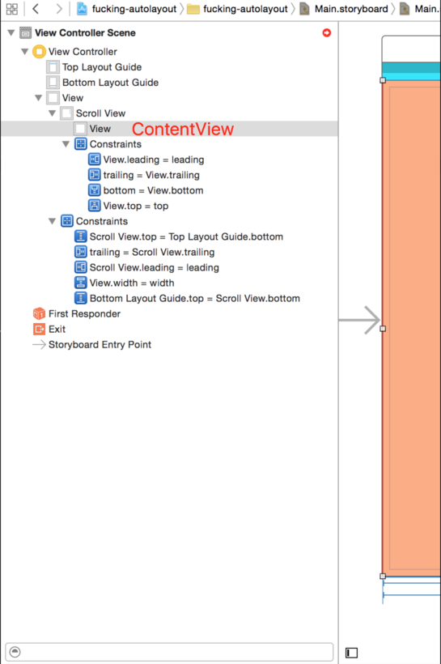

Config ScrollView With Autolayout in Interface Builder
Here is how to setup AutoLayout along with UIScrollView
Scroll View With Auto layout
Scroll view with auto layout is difficult. After having some research, here is how I did it.
Layout Sub-Views
First, you need to have a view which is a subview of that scroll view called contentView.
Everything should add to subview of contentView.
Here is a screenshot from Reference:

Auto Layout
Now we have everything setup. Its the time to config auto layout for all subviews display correctly on screen
Scroll View Auto Layout
First, config the auto layout for the scroll view. This depends on how you want to position the scroll view. In general, most cases, scrollView are full screen displayed. In that case we set (0, 0, 0, 0) edge constraints on all four sides
Anyway, it is based on how you want to positioned the scrollView, so it is very much flexible
Content View Auto Layout
Now after we positioned the scrollView, it is time for us to place the contentView with in the scrollView. This one is a little bit tricky. First, you should pin the contentView to the scrollView, which means it should have (0, 0, 0, 0) edge constraints.
Now you have told the system that the contentView is pined to scrollView, so what’s next? You need to tell system how large the contentView is. Because it was pined to the scrollView so the size of the contentView is still pretty much flexible. You need to give it a width or height. The height can be depend on its subviews, but if you don't want the scrollView to scroll horizontally, than you need to give the contentView a width. How?
Simply make contentView.width equal to scrollView.superView.width
More
After setting up the auto layout of the contentView the last thing is to remember that you should give a bottom constraint for the last thing inside the contentView, if you want it to scroll horizontally.